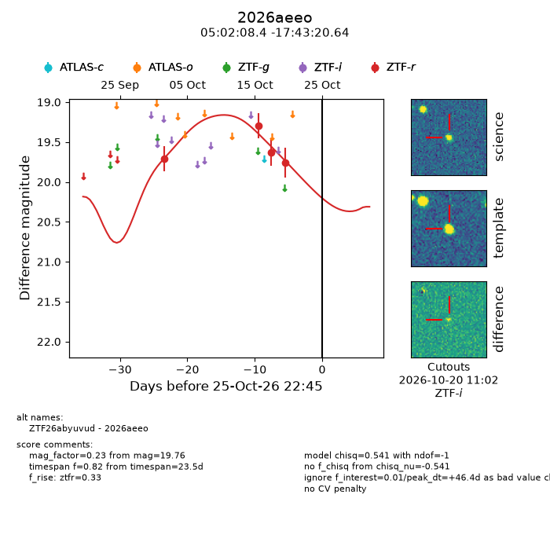
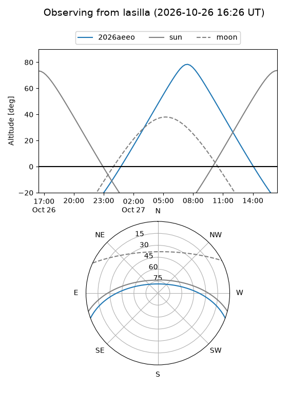
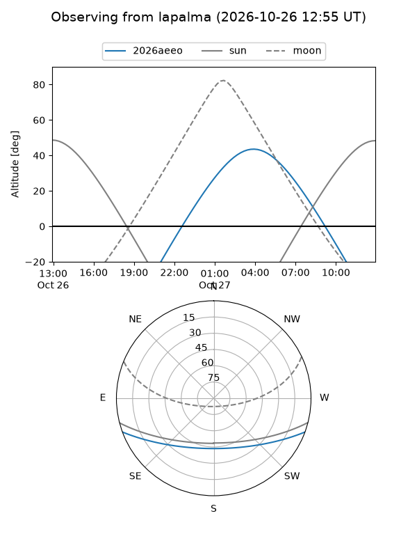
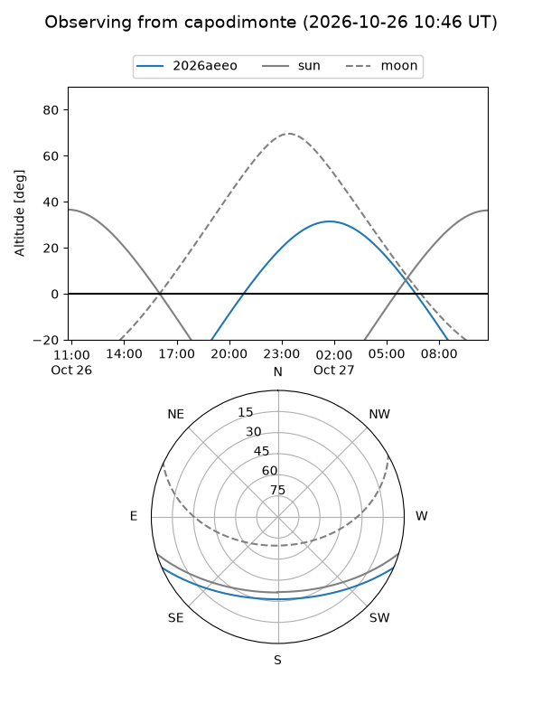
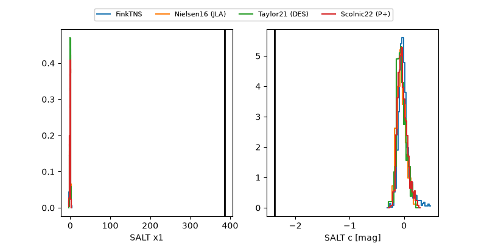

2026aeeo
Target 2026aeeo at 2026-10-26 10:42
Aliases and brokers:
FINK-ZTF: ztf.fink-portal.org/ZTF26abyuvud
Lasair-ZTF: lasair-ztf.lsst.ac.uk/objects/ZTF26abyuvud
ALeRCE-ZTF: alerce.online/object/ZTF26abyuvud
YSE-PZ: ziggy.ucolick.org/yse/transient_detail/2026aeeo
TNS name: wis-tns.org/object/2026aeeo
Direct TNS query: direct search
alt names
ZTF26abyuvud (ztf,fink_ztf)
2026aeeo (tns,yse)
Coordinates:
equatorial (ra, dec) = 75.5350,-17.72240
equatorial (HMS+DMS) = 05:02:08.41,-17:43:20.64
galactic (l, b) = (217.7641,-31.86679)
Flags:
peak dt: +46.9
Photometry:
last ztfr=19.76
4 ztfr detections
Lightcurve

Visibility



Additional plots
